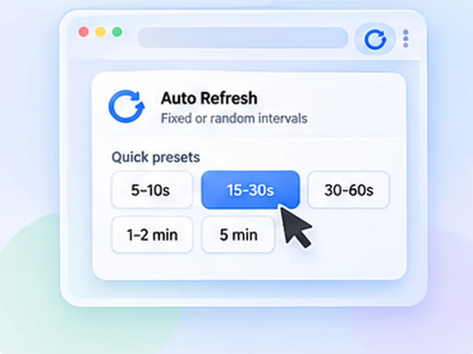

How to auto refresh a web page.
No major browser has an auto refresh button. Here are the ways to make a page reload itself, from the two-click method to doing it without an extension.

The quickest way: an auto refresh extension
Chrome, Firefox and Edge can all reload a tab on a schedule once you add an extension. With Free Auto Refresh it takes about ten seconds and works the same in every browser.
It also covers what the manual methods cannot: random intervals, stopping when the page changes, and not reloading while you are typing.
Quick setup
Install the extension
Add Free Auto Refresh from the Chrome Web Store or Firefox Add-ons.
Open the page and click the icon
Each tab gets its own timer.
Pick an interval
Use a preset such as 30–60s, or type your own minimum and maximum seconds.
Press Start
The page reloads straight away and then on your schedule. Press Stop or Alt+Shift+R to end it.
How to auto refresh Chrome without an extension
If you cannot install extensions, you can refresh a page automatically with a short script. Open the page, press F12, choose the Console tab, paste this and press Enter:
setTimeout(() => location.reload(), 30000)
That reloads the page once after 30 seconds. Because a reload wipes the script, it will not repeat on its own, which is the main limit of this method. A repeating version needs the page loaded inside a frame, and many sites block that.
When the no-extension method is enough
For a one-off reload after a known wait, or on a locked-down work computer. For anything that should keep going, an extension is simpler and more reliable.
How to refresh a page automatically in each browser
- Chrome: no built-in option. Use an auto refresh Chrome extension.
- Firefox: no built-in option either. Use the Firefox add-on.
- Edge, Brave and Opera: they accept Chrome extensions, so the Chrome version installs directly.
- Safari: no built-in option, and this extension is not available for Safari.
Choosing a refresh interval
Shorter is not better. Every reload is a request to the website, and very frequent ones can get you slowed down or blocked. As a rule: 5 to 10 seconds only for short bursts, 30 to 60 seconds for pages you are actively waiting on, and several minutes for dashboards and status pages.
A random interval spreads the requests out and is easier on the site than a fixed beat.
Refresh until something changes
If you are refreshing in order to spot a change, let the page tell you. Set a page change rule and the extension stops and sends a notification when your text appears, disappears, or the content changes.
Questions, answered.
How do I make a page refresh every 5 seconds?
Install Free Auto Refresh, set both Min and Max to 5 and press Start. Use short intervals only briefly; many sites limit rapid requests.
Can Chrome auto refresh a page without an extension?
Only once, with a console script. Chrome has no setting for repeated automatic refresh.
Does auto refresh work in a background tab?
Yes. Browsers slow timers slightly in hidden tabs, so the wait may run about a second long.
Will auto refresh log me out?
Usually the opposite: regular reloads keep many sessions alive. Some sites still sign you out after a fixed time.
Is auto refreshing a page allowed?
On most sites, at sensible intervals, yes. Some marketplaces, ticket sites and booking portals forbid it, so check their terms.
How do I refresh all tabs at once?
Free Auto Refresh works per tab. Start it in each tab you want refreshed.
Skip the manual reloads.
Free Auto Refresh does it on a timer, for Chrome and Firefox.
Not seeing the feature you need?
Share the browser task you would like to make easier. Your idea helps guide what gets built next.